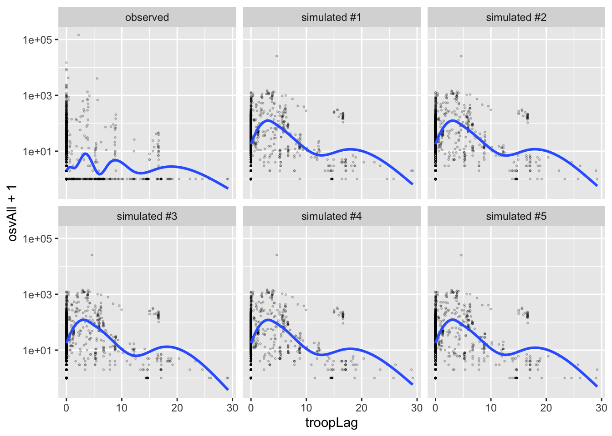

3.3 Poisson Model
We’ve now got two models:
\[ y_i \sim N(\mu_i, \sigma^2)\text{, where } \mu_i = X_i\beta \]
and \[ y_i \sim \text{Bernoulli}(\pi_i)\text{, where } \pi_i = \text{logit}^{-1}(X_i\beta). \] We can extend this in many ways by modifying the distribution \(f\) and the inverse-link function \(g^{-1}\) appropriately.
\[ y_i \sim f(\theta_i)\text{, where } \theta_i = g^{-1}(X_i\beta). \]
In the case of the normal model, \(f\) and \(g^{-1}\) are the normal distribution and the identity function. In the case of the logit model, they are the Bernoulli distribution and the inverse logit function.
To build a Poisson regression model, we can use the Poisson distribution for \(f\). We just need to identify an appropriate inverse-link function.
The Poisson distribution has a mean parameter \(\lambda\) that must be positive. Therefore, we need a function that maps the real line to the positive (or non-negative) reals. The exponential function \(g^{-1}(x) = e^x\) does this.
\[ y_i \sim \text{Poisson}(\lambda_i)\text{, where } \lambda_i = e^{X_i\beta}. \]
We can program the log-likelihood function into R for use in optim().
# create log-likelihood
poisson_ll <- function(beta, y, X) {
lambda <- exp(X%*%beta)
ll <- sum(dpois(y, lambda = lambda, log = TRUE))
return(ll)
}
# load hks data
hks <- read_csv("data/hks.csv") %>%
na.omit()## Rows: 3972 Columns: 10
## ── Column specification ────────────────────────────────────────────────────────
## Delimiter: ","
## dbl (10): osvAll, troopLag, policeLag, militaryobserversLag, brv_AllLag, osv...
##
## ℹ Use `spec()` to retrieve the full column specification for this data.
## ℹ Specify the column types or set `show_col_types = FALSE` to quiet this message.# create X and y
f <- osvAll ~ troopLag + policeLag + militaryobserversLag +
brv_AllLag + osvAllLagDum + incomp + epduration +
lntpop
mf <- model.frame(f, data = hks) # model frame
X <- model.matrix(f, mf) # model matrix X
y <- model.response(mf) # outcome variable y
par_start <- rep(0, ncol(X))
# this poisson model is so bad that optim has a bit of trouble
# intutitively, there's a single outlier that basically makes
# all poissons nearly impossible.
opt <- optim(par_start, fn = poisson_ll, y = y, X = X,
control = list(fnscale = -1))
opt$par## [1] -2.032493946 0.056296852 -1.000415138 -0.629900495 -0.002084798
## [6] -0.015359471 1.949812320 -0.009831003 0.357133706Or we can use the glm() function.
fit <- glm(f, data = hks, family = poisson)
coef(fit)## (Intercept) troopLag policeLag
## -3.579287811 -0.169658063 -3.272474092
## militaryobserversLag brv_AllLag osvAllLagDum
## 8.099848984 0.000560565 0.291144441
## incomp epduration lntpop
## 3.486201819 -0.022230231 0.189391395We could also use stan_glm() to obtain simulations from the posterior distribution.
3.3.1 Predictive Distribution
observed_data <- hks %>%
mutate(type = "observed",
linpred_hat = predict(fit, type = "link"))
sim_list <- list()
for (i in 1:5) {
sim_list[[i]] <- observed_data %>%
mutate(osvAll = rpois(nrow(observed_data),
lambda = exp(observed_data$linpred_hat)),
type = paste0("simulated #", i))
}
gg_data <- bind_rows(sim_list) %>%
bind_rows(observed_data) %>%
glimpse()## Rows: 22,476
## Columns: 12
## $ osvAll <dbl> 291, 307, 1056, 272, 432, 191, 209, 199, 182, 180…
## $ troopLag <dbl> 0, 0, 0, 0, 0, 0, 0, 0, 0, 0, 0, 0, 0, 0, 0, 0, 0…
## $ policeLag <dbl> 0, 0, 0, 0, 0, 0, 0, 0, 0, 0, 0, 0, 0, 0, 0, 0, 0…
## $ militaryobserversLag <dbl> 0, 0, 0, 0, 0, 0, 0, 0, 0, 0, 0, 0, 0, 0, 0, 0, 0…
## $ brv_AllLag <dbl> 0, 138, 2428, 30, 850, 0, 0, 0, 0, 0, 0, 0, 0, 0,…
## $ osvAllLagDum <dbl> 1, 1, 1, 1, 1, 0, 0, 0, 0, 0, 0, 0, 0, 0, 0, 0, 0…
## $ incomp <dbl> 2, 2, 2, 2, 2, 2, 2, 2, 2, 2, 2, 2, 2, 2, 2, 2, 2…
## $ epduration <dbl> 2, 3, 4, 5, 6, 7, 8, 9, 10, 11, 12, 13, 14, 15, 1…
## $ lntpop <dbl> 10.88525, 10.88525, 10.88525, 10.88525, 10.88525,…
## $ conflict_id <dbl> 70, 70, 70, 70, 70, 70, 70, 70, 70, 70, 70, 70, 7…
## $ type <chr> "simulated #1", "simulated #1", "simulated #1", "…
## $ linpred_hat <dbl> 5.701372, 5.756500, 7.017963, 5.651498, 6.088931,…ggplot(gg_data, aes(x = linpred_hat, y = osvAll + 1)) +
geom_point(alpha = 0.1, shape = 21, size = 0.3) +
facet_wrap(vars(type)) +
scale_y_log10()
ggplot(gg_data, aes(x = troopLag, y = osvAll + 1)) +
geom_point(alpha = 0.3, shape = 21, size = 0.3) +
facet_wrap(vars(type)) +
scale_y_log10() +
geom_smooth(se = FALSE)## `geom_smooth()` using method = 'gam' and formula 'y ~ s(x, bs = "cs")'
3.3.2 Posterior Predictive Distribution
library(rstanarm); options(mc.cores = parallel::detectCores())## Loading required package: Rcpp## This is rstanarm version 2.21.1## - See https://mc-stan.org/rstanarm/articles/priors for changes to default priors!## - Default priors may change, so it's safest to specify priors, even if equivalent to the defaults.## - For execution on a local, multicore CPU with excess RAM we recommend calling## options(mc.cores = parallel::detectCores())stan_fit <- stan_glm(f, data = hks, family = "poisson")
library(tidybayes)
ppd <- hks %>%
add_predicted_draws(stan_fit, ndraws = 8) %>%
mutate(.draw = paste0("Draw #", .draw)) %>%
pivot_wider(names_from = .draw, values_from = .prediction) %>%
mutate(`Observed` = osvAll) %>%
pivot_longer(`Draw #1`:`Observed`, names_to = "type", values_to = "osvAll2") %>%
glimpse()## Rows: 33,714
## Columns: 15
## Groups: osvAll, troopLag, policeLag, militaryobserversLag, brv_AllLag, osvAllLagDum, incomp, epduration, lntpop, conflict_id, .row [3,746]
## $ osvAll <dbl> 4, 4, 4, 4, 4, 4, 4, 4, 4, 1, 1, 1, 1, 1, 1, 1, 1…
## $ troopLag <dbl> 0, 0, 0, 0, 0, 0, 0, 0, 0, 0, 0, 0, 0, 0, 0, 0, 0…
## $ policeLag <dbl> 0, 0, 0, 0, 0, 0, 0, 0, 0, 0, 0, 0, 0, 0, 0, 0, 0…
## $ militaryobserversLag <dbl> 0, 0, 0, 0, 0, 0, 0, 0, 0, 0, 0, 0, 0, 0, 0, 0, 0…
## $ brv_AllLag <dbl> 0, 0, 0, 0, 0, 0, 0, 0, 0, 138, 138, 138, 138, 13…
## $ osvAllLagDum <dbl> 1, 1, 1, 1, 1, 1, 1, 1, 1, 1, 1, 1, 1, 1, 1, 1, 1…
## $ incomp <dbl> 2, 2, 2, 2, 2, 2, 2, 2, 2, 2, 2, 2, 2, 2, 2, 2, 2…
## $ epduration <dbl> 2, 2, 2, 2, 2, 2, 2, 2, 2, 3, 3, 3, 3, 3, 3, 3, 3…
## $ lntpop <dbl> 10.88525, 10.88525, 10.88525, 10.88525, 10.88525,…
## $ conflict_id <dbl> 70, 70, 70, 70, 70, 70, 70, 70, 70, 70, 70, 70, 7…
## $ .row <int> 1, 1, 1, 1, 1, 1, 1, 1, 1, 2, 2, 2, 2, 2, 2, 2, 2…
## $ .chain <int> NA, NA, NA, NA, NA, NA, NA, NA, NA, NA, NA, NA, N…
## $ .iteration <int> NA, NA, NA, NA, NA, NA, NA, NA, NA, NA, NA, NA, N…
## $ type <chr> "Draw #1", "Draw #2", "Draw #3", "Draw #4", "Draw…
## $ osvAll2 <dbl> 326, 263, 298, 295, 276, 308, 280, 278, 4, 288, 2…ggplot(ppd, aes(x = troopLag, y = osvAll2 + 1)) +
geom_point(alpha = 0.2, shape = 21, size = 0.3) +
facet_wrap(vars(type)) +
geom_smooth(se = FALSE) +
scale_y_log10()## `geom_smooth()` using method = 'gam' and formula 'y ~ s(x, bs = "cs")'